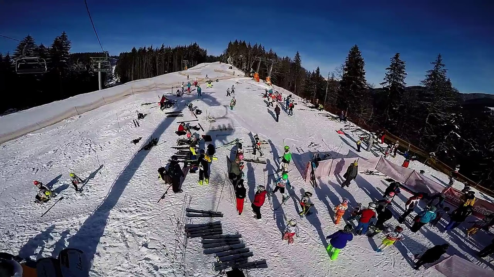
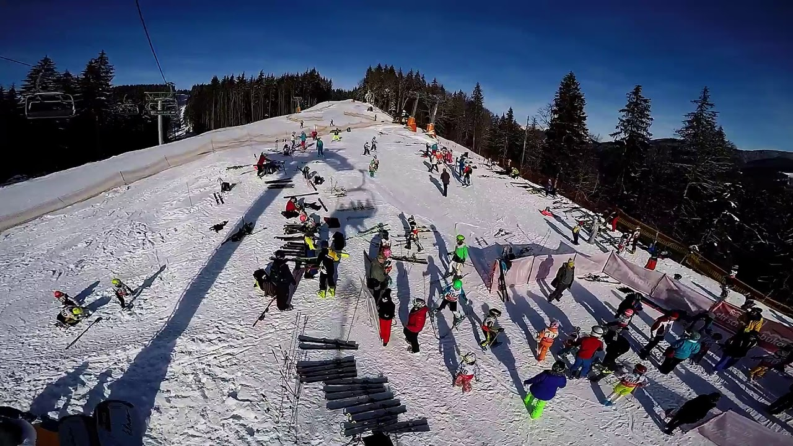

Slidinėjimas Austrijoje 9 d. (Šladmingas) - Slidinėjimas - Guliverio kelionės
2020.10.30 03:16

+370 37 331 418 info@guliveriokeliones.lt Informacija Išvykimo laikai ir vietos Kaip pirkti internetu Kelionės sutartis ir kiti dokumentai Svarbi informacija DUK Parašykite atsiliepimą Kelionės išsimokėtinai Kelionių agentūros Siūlome darbą Išvykimo laikai ir vietos Autobusų nuoma Autobusų nuoma Autobusų nuomos sutartis ir taisyklės Paslaugos Kontaktai Partneriams
Pagrindinis
Kelionės autobusu Artimiausios Kelionės medikams Kelionės po Lietuvą Kelionės po Lietuvą iš Kauno Kalėdinės ir naujametinės Slidinėjimas Kelionės pedagogams Savaitgalio Pažintinės Pramogų parkai Poilsinės - pažintinės Kelionės laivais Kartą metuose Kelionės į koncertus Piligriminės kelionės Dalykinės ir verslo kelionės Poilsis kalnuose
Kelionės po Lietuvą
Poilsis Lietuvoje
Slidinėjimas
Kelionės lėktuvu Guliverio kelionės Novaturas TEZ TOUR
Pagrindinis
Kelionės autobusu Artimiausios Kelionės medikams Kelionės po Lietuvą Kelionės po Lietuvą iš Kauno Kalėdinės ir naujametinės Slidinėjimas Kelionės pedagogams Savaitgalio Pažintinės Pramogų parkai Poilsinės - pažintinės Kelionės laivais Kartą metuose Kelionės į koncertus Piligriminės kelionės Dalykinės ir verslo kelionės Poilsis kalnuose
Kelionės po Lietuvą
Poilsis Lietuvoje
Slidinėjimas
Kelionės lėktuvu Guliverio kelionės Novaturas TEZ TOUR Pagrindinis Kelionės autobusu Artimiausios Kelionės medikams Kelionės po Lietuvą Kelionės po Lietuvą iš Kauno Kalėdinės ir naujametinės Slidinėjimas Kelionės pedagogams Savaitgalio Pažintinės Pramogų parkai Poilsinės - pažintinės Kelionės laivais Kartą metuose Kelionės į koncertus Piligriminės kelionės Dalykinės ir verslo kelionės Poilsis kalnuose Kelionės po Lietuvą Poilsis Lietuvoje Slidinėjimas Kelionės lėktuvu Guliverio kelionės Novaturas TEZ TOUR Informacija Išvykimo laikai ir vietos Kaip pirkti internetu Kelionės sutartis ir kiti dokumentai Svarbi informacija DUK Parašykite atsiliepimą Kelionės išsimokėtinai Kelionių agentūros Siūlome darbą Išvykimo laikai ir vietos Autobusų nuoma Autobusų nuoma Autobusų nuomos sutartis ir taisyklės Paslaugos Kontaktai Partneriams +370 37 331 418 info@guliveriokeliones.lt
Reikalinga pagalba?
Vilnius
8 5 2660700vilnius@guliveriokeliones.lt
Šeimyniškių g. 17
Kaunas
8 37 331418kaunas@guliveriokeliones.lt
Savanorių pr. 128 - 1
Klaipėda
8 608 61349klaipeda@guliveriokeliones.lt
Taikos pr. 28-209 (II a.), Vėtrungės pasažas
Šiauliai
8 41 545222siauliai@guliveriokeliones.lt
P. Višinskio g. 32-2, Šiauliai
Utena
8 389 61000utena@guliveriokeliones.lt
Aušros g. 37
Slidinėjimas Austrijoje 9 d. (Šladmingas)
Guliverio kelionės Slidinėjimas Slidinėjimas Austrijoje 9 d. (Šladmingas) Galerija Žemėlapis Programa Datos ir Viešbučiai Kurortai Atmintinė Atsiliepimai (2) Klausti Pirkti Šešios slidinėjimo dienos! Apgyvendinimas 4* viešbutyje su baseinu ir sauna! Austrija Schladming - Dachstein 2021-01-16 01-24 vietų yra 639,00 € PIRKTIvisos datos ir kainos
Slidinėjimas Austrijoje 9 d. (Šladmingas)
Atsisiųsti kelionės programą1 diena Anksti ryte išvykstame iš Lietuvos. Kelionė per Lenkiją, Čekiją. Nakvynė viešbutyje Čekijoje.
2 diena Pusryčiai (švediškas stalas). Kelionė per Čekiją, Austriją. Vakare atvykstame į viešbutį Alpenkrone **** . Viešbutis įsikūręs Filzmoos miestelyje, apie 25 km nuo slidinėjimo centrų. Atvykus Jūsų lauks keturių patiekalų vakarienė (karštą patiekalą galėsite rinktis iš trijų variantų), gausus salotų baras. Nakvynė viešbutyje.
3 - 7 diena Pusryčiai (švediškas stalas) . Inventoriaus nuoma. Slidinėjimas Šladmingo slidinėjimo kurorte, kuris apjungia keturis slidinėjimo centrus (Hauser Kaibling, Planai, Hochwurzen, Reiteralm) į vieną. Čia įrengta 230 km įvairaus sudėtingumo trasų ir 88 keltuvai. Trasos čia išsidėsčiusios 1850 – 2015 metrų aukštyje. Vakarienės ir nakvynės viešbutyje.
Vakarais viešbutyje galėsite mėgautis sauna, maudytis baseine, žaisti stalo tenisą. Už papildomą mokestį naudotis SPA paslaugomis ir soliariumu.
8 diena Pusryčiai (švediškas stalas) . Išvykstame iš viešbučio. Slidinėjimas. Inventoriaus grąžinimas, atsisveikinimas su kalnais. Apie 16:00 išvykstame namų link. Kelionė per Austriją, Čekiją. Nakvynė viešbutyje Čekijoje.
9 diena Pusryčiai (švediškas stalas) . Kelionė per Čekiją, Lenkiją. Vėlai vakare grįžtame į Lietuvą
Į kelionės kainą įskaičiuota
kelionė autobusu; 6 nakvynės viešbutyje Austrijoje su pusryčiais ir vakarienėmis; 2 nakvynės viešbučiuose su pusryčiais; nuvežimas iki slidinėjimo trasų ir parvežimas į viešbutį; kelionės dokumentų sutvarkymas.
Į kelionės kainą neįskaičiuota
slidinėjimo abonementas (žr. kainų lentelę); slidinėjimo inventoriaus nuoma ~ 25 EUR dienai; medicininių išlaidų užsienyje ir civilinės atsakomybės draudimas.
Pastabos
Kelionių organizatorius turi teisę keisti slidinėjimo programą atsižvelgiant į oro sąlygas.
Kelionės priemokos
Kurorto mokestis (privaloma) 10,00 €Medicininių išlaidų draudimas
Medicininių išlaidų draudimas vaikui (4-10 m.) 24,00 € Medicininių išlaidų ir civilinės atsakomybės draudimas vaikui (4-10 m.) 27,00 € Medicininių išlaidų draudimas vaikui / jaunimui (11-25 m.) 19,00 € Medicininių išlaidų ir civilinės atsakomybės draudimas vaikui / jaunimui (11-25 m.) 22,00 € Medicininių išlaidų draudimas suaugusiam (26-60 m.) 24,00 € Medicininių išlaidų ir civilinės atsakomybės draudimas suaugusiam (26-60 m.) 27,00 € Medicininių išlaidų draudimas senjorui (61-70 m.) 35,00 € Medicininių išlaidų ir civilinės atsakomybės draudimas senjorui (61-70 m.) 39,00 € Medicininių išlaidų draudimas senjorui (71-75 m.) 59,00 € Medicininių išlaidų ir civilinės atsakomybės draudimas senjorui (71-75 m.) 62,00 € Medicininių išlaidų draudimas senjorui (76-80 m.) 93,00 € Medicininių išlaidų ir civilinės atsakomybės draudimas senjorui (76-80 m.) 97,00 €Nuolaidos
10 asmenų grupei - 10-ajam asmeniui -80% 9 asmenų grupei - 9-ajam asmeniui -65% 8 asmenų grupei - 8-ajam asmeniui -50% 7 asmenų grupei - 7-ajam asmeniui -35% 6 asmenų grupei - 6-ajam asmeniui -25% Keliaujantiems penktą ir daugiau kartų -12% Keliaujantiems ketvirtą kartą -10% Keliaujantiems trečią kartą -7% Keliaujantiems antrą kartą -5% Senjorams (nuo 65 m.) -10% Vaikams nuo 13 m. ir studentams -5% Jaunavedžiams -10%Užsakant kelionę, taikoma viena iš nuolaidų – išankstinio pirkimo, specialaus pasiūlymo, fortūnos, paskutinės minutės, lojalaus kliento, studento, senjoro, grupinė, akcijos nuolaida. Nuolaidos nesumuojamos. Keliautojai gali rinktis didžiausią jiems tuo metu galiojančią nuolaidą. Nuolaidos netaikomos kelionės priemokoms ir draudimui.
Pasirinkite kelionės datą
Išvykimas: 2021-01-16 Grįžimas: 2021-01-24 Laisvos vietos: vietų yra nuo 639,00 € PIRKTI rodyti visas datas slėpti visas datas 2021-01-16 01-24 vietų yra NUO 639,00 € PIRKTIAlpenkrone**** (pusryčiai ir vakarienės)
Vieta : Viešbutis įsikūręs Filzmoos miestelyje. Iki Šladmingo slidinėjimo kurorto ~25 km.
Kambariai : vienviečiai, dviviečiai, triviečiai.
Kambariuose : dušas, WC, TV, telefonas, kai kuriuose kambariuose yra balkonai.
Maitinimas : pusryčiai – švediškas stalas, vakarienė – keturių patiekalų (galima rinktis iš trijų karštų patiekalų), salotų baras.
Papildomos paslaugos : restoranas, baras, baseinas, sauna (nuo 14 metų), stalo tenisas. Už papildomą mokestį SPA, soliariumas.
Į kelionės kainą įskaičiuota
kelionė autobusu; 6 nakvynės viešbutyje Austrijoje su pusryčiais ir vakarienėmis; 2 nakvynės viešbučiuose su pusryčiais; nuvežimas iki slidinėjimo trasų ir parvežimas į viešbutį; kelionės dokumentų sutvarkymas.
Į kelionės kainą neįskaičiuota
slidinėjimo abonementas (žr. kainų lentelę); slidinėjimo inventoriaus nuoma ~ 25 EUR dienai; medicininių išlaidų užsienyje ir civilinės atsakomybės draudimas.
Pastabos
Kelionių organizatorius turi teisę keisti slidinėjimo programą atsižvelgiant į oro sąlygas.
Kelionės priemokos
Kurorto mokestis (privaloma) 10,00 €Medicininių išlaidų draudimas
Medicininių išlaidų draudimas vaikui (4-10 m.) 24,00 € Medicininių išlaidų ir civilinės atsakomybės draudimas vaikui (4-10 m.) 27,00 € Medicininių išlaidų draudimas vaikui / jaunimui (11-25 m.) 19,00 € Medicininių išlaidų ir civilinės atsakomybės draudimas vaikui / jaunimui (11-25 m.) 22,00 € Medicininių išlaidų draudimas suaugusiam (26-60 m.) 24,00 € Medicininių išlaidų ir civilinės atsakomybės draudimas suaugusiam (26-60 m.) 27,00 € Medicininių išlaidų draudimas senjorui (61-70 m.) 35,00 € Medicininių išlaidų ir civilinės atsakomybės draudimas senjorui (61-70 m.) 39,00 € Medicininių išlaidų draudimas senjorui (71-75 m.) 59,00 € Medicininių išlaidų ir civilinės atsakomybės draudimas senjorui (71-75 m.) 62,00 € Medicininių išlaidų draudimas senjorui (76-80 m.) 93,00 € Medicininių išlaidų ir civilinės atsakomybės draudimas senjorui (76-80 m.) 97,00 €Nuolaidos
10 asmenų grupei - 10-ajam asmeniui -80% 9 asmenų grupei - 9-ajam asmeniui -65% 8 asmenų grupei - 8-ajam asmeniui -50% 7 asmenų grupei - 7-ajam asmeniui -35% 6 asmenų grupei - 6-ajam asmeniui -25% Keliaujantiems penktą ir daugiau kartų -12% Keliaujantiems ketvirtą kartą -10% Keliaujantiems trečią kartą -7% Keliaujantiems antrą kartą -5% Senjorams (nuo 65 m.) -10% Vaikams nuo 13 m. ir studentams -5% Jaunavedžiams -10%Užsakant kelionę, taikoma viena iš nuolaidų – išankstinio pirkimo, specialaus pasiūlymo, fortūnos, paskutinės minutės, lojalaus kliento, studento, senjoro, grupinė, akcijos nuolaida. Nuolaidos nesumuojamos. Keliautojai gali rinktis didžiausią jiems tuo metu galiojančią nuolaidą. Nuolaidos netaikomos kelionės priemokoms ir draudimui.
Schladming - Dachstein
TRASŲ ŽEMĖLAPIS RODYTI ŽEMĖLAPYJE
Keltuvų kainos
Šladmingo slidinėjimo abonementas
Trukmė
Suaugęs
Vaikas*
Jaunuolis*
26.01.2019 - 15.03.2019
5d.
254,00 EUR
127,00 EUR
190,50 EUR
Vaikas* - gimęs 2004-2013 m., jaunuolis* - gimęs 2001-2002-2003 m.
Slidinėjimo abonementas išduodamas sumokėjus 3 EUR užstatą
Atmintinė
AtsisiųstiIŠVYKIMO INFORMACIJA
Jeigu jums pasireiškė ūmių viršutinių kvėpavimo takų ligų požymių (sloga, kosulys, čiaudulys, pasunkėjęs kvėpavimas) vykti į kelionę negalite. Prašome kreiptis į savo šeimos gydytoją.
Keliautojai privalo :
Pasiimti į kelionę apsaugines veido kaukes ir jas dėvėti; Laikytis visų asmens higienos reikalavimų (rankų higiena, kosėjimo, čiaudėjimo etiketas ir kt.);Mes užtikriname , kad:
Autobusai dezinfekuojami prieš ir po kiekvieno reiso bei valomi ir dezinfekuojami pagal SAM reikalavimus; Autobusuose įrengti keleiviams skirti dezinfekatoriai, todėl prašome dezinfekuoti rankas įlipant ir išlipant iš autobuso.Maloniai prašome elgtis atsakingai ir laikytis naujų taisyklių, nes tik kartu galime užtikrinti, kad kelionės būtų saugios.
Išvykimo vietos. Į kelionę išvykstame iš šių pagrindinių vietų:
Vilniaus nuo PC Akropolis aikštelė, Ozo g. 25. Kauno (Kauno pilies automobilių stovėjimo aikštelė). Alytaus arba Marijampolės. Išvykimo miestas priklauso nuo to, kuriame mieste pageidauja įlipti daugiau turistų. Paėmimas iš Marijampolės negalimas, jei autobusas važiuoja maršrutu Kaunas - Vilnius - Alytus. Nuo 2020-04-11 iki 2020-10-25 paėmimas iš Alytaus ir Marijampolės garantuojamas, esant ne mažiau 2 turistams.Svarbu:
Išvykimo miestą būtina pasirinkti kelionės užsakymo metu. Išvykimo miestą galite keisti likus ne mažiau kaip 5 dienoms iki išvykimo. Dažniausiai į kelionę išvykstame šiuo maršrutu: Vilnius – Kaunas – Alytus/Marijampolė. Tačiau išvykimo miestų eiliškumas gali keistis. Tikslų išvykimo laiką ir vietas bei kelionių organizatoriaus atstovo kontaktinę informaciją rasite mūsų interneto svetainėje likus 2-3 dienoms iki kelionės. Išvykimo informaciją gausite SMS žinute Jūsų nurodytu telefono numeriu likus 1 dienai iki kelionės. Į išvykimo vietą prašome atvykti likus 10-15 min. iki nurodyto išvykimo laiko ir nevėluoti. Kelionių organizatorius neatsako už turistų vėlavimą atvykti į išvykimo vietą ir neįsipareigoja jų laukti.Pervežimai ir automobilių saugojimo paslaugos. Už papildomą mokestį organizuojame pervežimus iš Klaipėdos, Kryžkalnio, Šiaulių ir Panevėžio. Turistams, kurie į Kauną ar Vilnių savo automobiliu atvyksta iš kitų miestų, rekomenduojame iš anksto savarankiškai užsisakyti automobilio saugojimo paslaugą. Išsamią informaciją apie pervežimų sąlygas ir kainas bei automobilių saugojimo paslaugas rasite interneto svetainėje https://www.guliveriokeliones.lt/isvykimo_laikai_ir_vietos
KELIONĖS DOKUMENTAI
Vykstant į kelionę privaloma turėti Lietuvos Respublikos piliečio PASĄ arba ASMENS TAPATYBĖS KORTELĘ , galiojančius visos kelionės metu. Jei paso ar asmens tapatybės kortelės galiojimo laikas baigiasi kelionės metu, jie laikomi negaliojančiais. Rekomenduojame į kelionę vykti su asmens dokumentu, kuris galioja bent 3 mėnesius po kelionės pabaigos. Rekomenduojame į kelionę pasiimti ir asmens dokumento kopiją.
Dėl informacijos apie sienų kirtimo ir pasų kontrolės tvarką ne Lietuvos Respublikos piliečiams prašome kreiptis į Migracijos departamentą arba Užsienio reikalų ministeriją.
VAIKŲ IŠVYKIMO Į UŽSIENIO VALSTYBES TVARKA
Į kelionę vykstantiems vaikams, kaip ir suaugusiems, privaloma turėti asmens dokumentą , nurodytą skiltyje Kelionės dokumentai . Gimimo liudijimas nėra kelionės dokumentas.
Vaikams iki 18 metų, į šią kelionę vykstantiems be tėvų ar su vaiką lydėti įgaliotais asmenimis, raštiško vieno iš tėvų sutikimo nereikia.
Už vykstančių į keliones vaikų iki 18 metų sveikatą, gyvybę, priežiūrą atsako tėvai, globėjai arba vaiką lydėti įgalioti asmenys.
Informaciją apie nepilnamečių vaikų keliavimą į užsienio valstybes galite pasitikslinti Užsienio reikalų ministerijos internetinėje svetainėje http://keliauk.urm.lt/lt/keliaujantiems/pries-pradedant-kelione/nepilnameciu-vykimas
PINIGAI
Austrijos valiuta: euras (EUR).
Čekijos valiuta: Čekijos krona (CZK); 1 EUR ~ 25 CZK. Čekijos kronų galite įsigyti Lietuvoje arba kelionės metu išsikeisti iš eurų.
Lenkijos valiuta: Lenkijos zlotas (PLN); 1 EUR ~ 4,2 PLN. Lenkijos zlotų galite įsigyti prieš išvykstant į kelionę arba įsigyti pasienyje kelionės metu (išsikeisti iš eurų).
REKOMENDUOJAME TURĖTI
sporto inventorių: slides, lazdas, batus, šalmą arba snieglentę, batus, šalmą. Jei vyksta vaikai, apsauginis šalmas privalomas . Neturintiems sporto inventoriaus, rekomenduojame nuomotis nuvykus į slidinėjimo kurortą; slidininko/snieglentininko kostiumą (kurortuose kostiumai nenuomojami), kepurę, 2 poras pirštinių, kojines, akinius nuo saulės, apsauginį kremą veidui (nuo šalčio ir nuo saulės), balzamą lūpoms; pledą, nedidelę pagalvėlę kelionei autobusu; patogią avalynę, patogius drabužius pagal sezoną, galvos apdangalą, šiltesnių drabužių; higienos priemones, plaukų džiovintuvą, jei kelionės metu jis jums būtinas; medikamentų, kuriuos pastoviai vartojate (kelionės metu ligos gali paūmėti); vaistų nuo skausmo, peršalimo, vidurių užkietėjimo, virškinamojo trakto sutrikimų; pleistrų, kojų sąnarių tinimą ir skausmą malšinančio tepalo.DRAUDIMAS
Vykstantiems į kelionę rekomenduojame turėti medicininių išlaidų draudimą , garantuojantį būtinosios medicinos pagalbos užsienyje ir papildomų išlaidų, susidariusių dėl draudiminio įvykio, apmokėjimą. Tokį draudimą galite įsigyti kelionių agentūrose, draudimo bendrovių atstovybėse arba pirkdami kelionę mūsų biuruose ar internetu. Mūsų partneris – ADB „Gjensidige“ ( www.gjensidige.lt ). Užsisakę mūsų siūlomą draudimą būsite apdrausti būtinosios medicinos pagalbos ir repatriacijos išlaidų draudimu ( 100 000 EUR ).
Įsitikinkite, kad draudimas užtikrins apsaugą užsikrėtus COVID-19 (koronavirusu).
Vykstant į kelionę rekomenduojame turėti ir Europos sveikatos draudimo kortelę . Ši kortelė leidžia lengviau naudotis valstybinių ligoninių paslaugomis ir užtikrina, kad už medicinos pagalbos paslaugas mokėsite tą pačią kainą kaip ir vietiniai gyventojai. Kortelė neužtikrina nemokamų paslaugų, negalioja sveikatos priežiūros paslaugoms privačiose įstaigose ar repatriacijos išlaidoms dengti, pvz., jei turite grįžti namo greitosios pagalbos oro transportu. Kortelė galioja tik šiose Europos valstybėse – Airija, Austrija, Belgija, Bulgarija, Čekija, Danija, Estija, Graikija, Ispanija, Italija, Jungtinė Karalystė, Kipras, Latvija, Lenkija, Liuksemburgas, Malta, Olandija, Portugalija, Prancūzija, Rumunija, Slovakija, Slovėnija, Suomija, Švedija, Vengrija, Vokietija, Kroatija, Lichtenšteinas, Islandija, Norvegija, Šveicarijos Konfederacija. Kitose šalyse ESDK negalioja. Daugiau informacijos: http://www.vlk.lt/duk/Puslapiai/apieesdk.aspx
Rekomenduojame apsidrausti asmens civilinės atsakomybės draudimu , kuris atlygina žalą, kelionėje netyčia padarytą kitų asmenų sveikatai, gyvybei ar turtui. Užsisakę mūsų siūlomą draudimą būsite apdrausti asmens civilinės atsakomybės draudimu ( 50 000 EUR ).
Rekomenduojame apsidrausti neįvykusios kelionės draudimu, kuris padės išvengti nuostolių, susijusių su keliautojo negalėjimu išvykti į kelionę arba jai nutrūkus dėl nuo keliautojo nepriklausančių aplinkybių. Neįvykusios kelionės draudimas apima pagrindines rizikas, dėl kurių keliautojas negali išvykti į kelionę arba turi nutraukti kelionę: paties asmens ar artimo giminaičio mirtis arba netikėta sunki, gyvybei pavojinga liga ar trauma prieš pat kelionę ar kelionės metu; prieš pat kelionę ar kelionės metu prarastas turtas; vykstant į kelionės išvykimo vietą įvykęs eismo įvykis ir kt. Apsidrausti ADB „Gjensidige“ neįvykusios kelionės draudimu galima likus ne trumpesniam kaip 14 kalendorinių dienų laikotarpiui iki kelionės pradžios. Jei kelionė rezervuota likus trumpesniam kaip 14 kalendorinių dienų laikotarpiui iki kelionės pradžios, tai neįvykusios kelionės draudimo sutartis gali būti pasirašyta per 2 darbo dienas nuo kelionės rezervavimo datos, jei nesutarta kitaip. Laikotarpis iki kelionės pradžios, kai galima sudaryti neįvykusios kelionės draudimo sutartį, negali būti trumpesnis nei 7 dienos.
Įsigydami kelionės draudimą kelionių agentūrose prašykite, kad darbuotojai supažindintų su draudimo taisyklėmis.
Draudimo taisyklės: https://sales.gjensidige.lt/public_uploads/T061Rules20160101.pdf
AUTOBUSAS
Į keliones vykstame 28-70 vietų turistinės klasės autobusais, kuriuose yra vaizdo ir garso grotuvai, oro vėdinimo sistema, tualetas. Autobusuose neteikiamos WiFi ir telefonų įkrovimo paslaugos, netiekiamas karštas vanduo.
Vieta autobuse
Užsakydami kelionę galite pasirinkti pageidaujamą sėdėjimo vietą autobuse pagal pateiktą standartinį autobuso planą. Jei į kelionę vykstate vienas, sėdėjimo vieta Jums parenkama automatiškai. Plane vietos žymimos skaičiais ir raidėmis: skaičius nurodo sėdynių eilės numerį, o raidė – konkrečią vietą toje eilėje (A, B – vairuotojo pusėje; C, D – kelionės vadovo pusėje). Visuose autobusuose vietos sunumeruotos skirtingai, tad likus 1 dienai iki išvykimo į kelionę gausite SMS žinutę, kurioje bus nurodytas Jūsų pasirinktos vietos numeris konkrečiame autobuse (pvz., 5A vieta gali būti 17 vieta). Jei į kelionę vyksta autobusas, kurio sėdynių planas nestandartinis, kelionių organizatorius gali pakeisti Jūsų pasirinktą vietą.
Papildomą vietą autobuse galite užsakyti už papildomą mokestį (kainos teiraukitės užsakydami kelionę). Papildomai parduodamų vietų skaičius ribotas.
Taisyklės keliaujantiems autobusu:
Pagal galiojančias ES taisykles autobusuose, kuriuose įrengti saugos diržai, keleiviai privalo važiuoti juos prisisegę. Autobusui judant griežtai draudžiama vaikščioti ir stovėti autobuso salone. Autobuse griežtai draudžiama rūkyti ir gerti alkoholinius gėrimus. Tualetu autobuse prašome naudotis tik ekstra atveju, nes tualeto talpa yra ribota. Autobuso salone keliose vietose prie lango yra įrengti avariniai plaktukai, skirti avariniam stiklo išdaužimui. Kelionės metu, išskyrus avarijos atvejus, griežtai draudžiama juos liesti. Pageidautina, kad kelionės autobusu bagažo svoris asmeniui neviršytų 25 kg. Bagažas kelionės metu laikomas autobuso bagažinėje. Su savimi į autobuso saloną pasiimkite tik būtiniausius daiktus. Turistas turi galimybę vežtis tik vieną sporto inventoriaus komplektą: slides, lazdas, batus ir šalmą arba snieglentę, batus ir šalmą. Sporto inventorius turi būti supakuotas specialiame dėkle. Jei kelionės metu yra tarpinė nakvynė, rekomenduojame būtiniausius daiktus ir higienos reikmenis, reikalingus tarpinei nakvynei, susipakuoti atskirame krepšyje ir pasiimti su savimi į autobuso saloną. Nepalikite be priežiūros vertingų daiktų autobuse. Turto vagystės ar sunaikinimo dėl nusikalstamos trečiųjų asmenų veiklos atveju nei kelionės organizatorius, nei transporto paslaugų teikėjas atsakomybės neprisiima.KELIONĖS EIGA
Į kelionę iš pagrindinių išvykimo vietų (Vilniaus, Kauno) išvykstame anksti ryte, dažniausiai tarp 3:00 ir 06:00. Į viešbučius nakvynei atvykstame 20:00-00:00. Rytais iš viešbučių išvykstame 07:00-09:00 (po pusryčių). Kelionės programoje nurodytas planuojamas grįžimo iš kelionės laikas: „vakare“ – 18:00-22:00; „vėlai vakare“ – 22:00-00:00; „naktį“ – 00:00-04:00. Atvykimo į viešbučius ir grįžimo iš kelionės laikas gali keistis dėl įvairių priežasčių (transporto kamščių, kelių remonto darbų, meteorologinių sąlygų), kurių neįmanoma numatyti iš anksto.
Kelionės metu kas 2,5-3,5 val. numatyti trumpi sustojimai poilsiui (~20 min). Visos kelionės metu bus sudaryta galimybė papietauti ir pavakarieniauti arba įsigyti maisto.
APGYVENDINIMAS
Kambariai – vienviečiai, dviviečiai, dviviečiai su pristatomomis lovomis, triviečiai. Kai kuriuose mažaaukščiuose viešbučiuose gali nebūti lifto. Viešbučio administracija savo nuožiūra apgyvendina grupę laisvuose užsakyto tipo kambariuose. Prašymai gyventi konkrečiame aukšte, gretimuose kambariuose neįpareigoja kelionių organizatoriaus ir viešbučio, ir yra tenkinami tik esant galimybei. Jei dėl viešbučio lokacijos autobusas negali privažiuoti prie pat viešbučio, gali tekti kelis šimtus metrų iki viešbučio eiti pėsčiomis.
Dviviečiai kambariai
Standartiniame dviviečiame kambaryje gali būti viena dvigulė arba dvi atskiros lovos. Ne visi viešbučiai yra įrengę triviečius kambarius, todėl užsakius vietą trečiam asmeniui, dviviečiame kambaryje gali būti pastatoma papildoma lova, sofa, sulankstoma lova arba sulankstomas fotelis.
Jei į kelionę vykstate vienas
Apgyvendinimas vienviečiame kambaryje yra brangesnis, todėl jei pageidaujate gyventi vienviečiame kambaryje, turėsite mokėti prie kelionės kainos nurodytą priemoką. Jei kelionę užsakote likus bent 7 dienoms iki išvykimo ir nenorite mokėti vienviečio kambario priemokos, būsite apgyvendinti dviviečiame arba dviviečiame su pristatoma lova kambaryje kartu su kitais turistais. Jei kelionę užsakote likus mažiau nei 7 dienoms iki išvykimo, kelionių organizatorius neįsipareigoja Jus apgyvendinti viename kambaryje su kitais turistais – šiuo atveju turėsite mokėti vienviečio kambario priemoką.
KITA INFORMACIJA
TARPTAUTINĖS ELGESIO TAISYKLĖS SLIDININKAMS IR SNIEGLENTININKAMS
1. Gerbti kitus.
Slidininkas ar snieglentininkas privalo elgtis taip, kad nesukeltų pavojaus ar nepakenktų kitiems.
2. Kontroliuoti slidinėjimo greitį.
Slidininkas ar snieglentininkas privalo kontroliuoti savo judesius. Šliuoždamas jis privalo pritaikyti greitį ir elgesio manieras įvertinant savo asmeninius gebėjimus, dominuojančios vietovės padėtį, sniego ir oro sąlygas, taip pat ir eismo tankumą.
3. Kelio pasirinkimas.
Slidininkas ar snieglentininkas artėjantis iš užpakalio privalo pasirinkti tokią kryptį, kad nesukeltų pavojaus slidininkui ar snieglentininkui priešakyje.
4. Aplenkimas.
Slidininkas ar snieglentininkas turi aplenkti kitą slidininką ar snieglentininką aukščiau ar žemiau ir iš kairės ar dešinės, numatydamas, kad jis paliks pakankamai erdvės aplenktam slidininkui ar snieglentininkui, nesudarydamas jokių tyčinių ar nesąmoningų manevrų.
5. Pradėjimas, startavimas, lipimas į viršų.
Slidininkas ar snieglentininkas čiuožti pradeda pažymėta trasa. Po sustojimo ar lipimo į viršų nuokalne ir pradėdamas čiuožti vėl, privalo apsidairyti į viršų ir į apačią, kad gali šliuožti nesukeldamas pavojaus sau ir kitiems.
6. Sustojimas greitoje trasos dalyje.
Slidininkas ar snieglentininkas privalo išvengti sustojimo greitoje nusileidimo trasos dalyje, siauroje vietoje ar kur ribotas matomumas, nebent neabejotinai tai būtina. Nukritus tokioje vietoje, slidininkas ar snieglentininkas privalo sprukti nuo trasos kaip tik įmanoma greit.
7. Kopimas ir nusileidimas pėsčiomis.
Slidininkas ar snieglentininkas kopdamas ar nusileisdamas pėsčiomis, turi laikytis šone, nuo nusileidimo trasos.
8. Atsižvelgti į iškabas ir ženklinimus.
Slidininkas ar snieglentininkas privalo atsižvelgt į visas iškabas ir ženklinimus esančius prie nusileidimo trasų.
9. Pagalba
Nelaimingo atsitikimo atveju, kiekvienas slidininkas ar snieglentininas privalo padėti nukentėjusiam.
10. Tapatybės nustatymas
Kiekvienas slidininkas ar snieglentininkas bei liudininkas ar atsakingas asmuo , privalo apsikeisti vardais ir adresais po incidento.
Bendrieji FIS (Tarptautinės slidinėjimo federacijos) taisyklių teiginiai
Slidinėjimas ir šliuožimas snieglente kaip ir visos sporto šakos sukelia riziką. FIS taisyklės turi būti idealiu elgesio pavyzdžiu atsakingam ir atsargiam slidininkui ar snieglentininkui ir jų tikslas yra išvengti nelaimingų atsitikimų trasoje. FIS taisyklės liečia visus slidininkus ir snieglentininkus. Slidininkai ar snieglentininkai privalo susipažint su joms ir jų laikytis. Jei taisyklių nesilaikoma, incidento atveju, jo elgesys gali būti patrauktas civilinei ir baudžiamajai atsakomybei.
1. taisyklė
Slidininkai ir snieglentininkai atsakingi ne tik už savo elgesį, bet taip pat už slidinėjimo reikmenis su trūkumais. Tai taip pat liečia tuos, kurie naudoja naujai sukurtus reikmenis.
2. taisyklė
Susidūrimai paprastai nutinka todėl, kad slidininkai ar snieglentininkai čiuožia per greitai, nesivaldo arba prastas jų matomumo laukas. Slidininkas ar snieglentininkas privalo sugebėti sustoti , apsisukti ir judėti savo matomumo ribose. Perpildytose teritorijose ar vietose kur matomumas yra prastas, slidininkas ar snieglentinikas privalo judėti lėtai ypač stataus šlaito pakraštyje, nusileidimo trasos apačioje, ir vietose kurias supa pakėlimo takai.
3. taisyklė
Slidinėjimas ir čiuožimas snieglente yra nesuvaržytos sporto šakos, kur kiekvienas gali judėti kur ir kaip tik nori, su sąlyga, kad jie laikysis taisyklių ir čiuoš atsižvelgdami į savo asmeninius gebėjimus ir kalnuose vyraujančią padėtį. Slidininkas ar snieglenintininkas priešakyje turi pirmumo teisę. Slidininkas ar snieglentininkas čiuoždamas paskui kitą ta pačia kryptimi, turi palaikyti pakankamą distanciją tarp savęs ir kito slidininko ar snieglentininko tam, kad paliktų pirma čiuožiančiam slidininkui ar snieglentininkui pakankamai erdvės laisvai judėti.
4. taisyklė
Slidininkas ar snieglentininkas, kuris aplenkia kitą, visiškai atsakingas dėl to, kad užbaigdamas manevrą, nesukels sunkumų aplenktam slidininkui ar snieglentininkui. Ši atsakomybė išlieka iki lenkimas bus galutinai atliktas. Ši taisyklė galioja net tuomet, kai lenkiamas nejudantis slidininkas ar snieglentininkas.
5. taisyklė
Patirtis įrodo, kad įsijungimas į kitą nusileidimo trasą ar pradėjimas čiuožti po sustojimo yra
incidentų priežastis. Neabejotinai būtina, kad slidininkas ar snieglentininkas pats susiorientuotų situacijoje ir įčiuožtų į kitą nusileidimo trasą saugiai, neblokuotų ir nesukeltų pavojaus sau bei kitiems. Vėl pradėjęs tinkamai šliuožti ar leistis snieglente, netgi lėtai, pagal 3 taisyklę jis turi pirmenybę prieš greitesnius slidininkus ar snieglentininkus, besileidžiančius iš viršaus ar šliuožiančius iš paskos. Karvingo slidžių ir snieglenčių sukūrimas leidžia jų naudotojams sukiotis ir pasisukt į viršų ant šlaitų. Taigi jie juda priešprieša bendram šlaito judėjimui. Todėl jie privalo įsitikinti, kad laiku sugebės tai daryti, nesukeldami pavojaus sau bei kitiems.
6. taisyklė
Išskyrus labai plačią nusileidimo trasą, sustoti privaloma trasos pakraštyje. Sustoti negalima siauroje vietoje ar ten kur iš viršaus prastas matomumas.
7. taisyklė
Judantis prieš bendrą kryptį sudaro nelauktas kliūtis kitiems slidininkams ar snieglentininkams. Pėdsakai apgadina nusileidimo trasą ir gali sukelti pavojų slidininkams ar sniegletininkams.
8. taisyklė
Nusileidimo trasos sunkumo lygis yra nurodytas juoda, raudona, mėlyna ir žalia spalvomis. Slidininkas ar snieglentininkas gali laisvai pasirinkti norimą trasą. Trasos taip pat pažymėtos ir kitais ženklais, kurie rodo kryptį arba įspėja apie pavojus ar trasos užbaigimą. Užbaigiamojo trasos ženklo, nurodančio pavojų, privaloma griežtai laikytis. Slidininkai ar snieglentininkai turi suprasti, kad įspėjamieji ženklai iškabinti jų pačių labui.
9. taisyklė
Pagrindinis principas visiems sportininkams, kad jie privalo suteikti pagalbą po incidento nepriklausomai nuo bet kokių teisinių įsipareigojimų. Nedelsiant turi būti suteikta pirmoji pagalba, atitinkamai įspėti autoritetingą specialistą ir incidento vietą paženklinti, kad įspėti kitus slidininkus ar snieglentininkus. FIS tikisi, kad išpuoliai ir nusižengimai, kurie pasitaiko slidinėjime, turės baudžiamąją nuosprendį, panašų į išpuolius ir nusižengimus kelyje. Ir lygiavertės baudos bus skirtos visoms šalims, kuriose tokie įstatymai dar negalioja.
10. taisyklė
Liudytojai yra labai svarbūs padaryti pilną ir teisingą incidento ataskaitą. Todėl kiekvienas, kaip atsakingas žmogus, būdamas liudininku, turi laikyti pareiga suteikti informaciją.
PRETENZIJOS
Jeigu kelionės metu iškilo nepasitenkinimas dėl kelionės sutartyje nurodytų paslaugų nevykdymo ar netinkamo jų vykdymo, pretenzijos turi būti pateikiamos kelionės vadovui arba atstovui kelionės metu, nes vietoje galima greičiausiai išspręsti ir pašalinti iškilusius nesklandumus. Nepavykus išspręsti žodinių pretenzijų, jos turi būti pateikiamos vietoje raštu. Nepavykus išspręsti nesklandumų kelionės metu, pretenzijas galima pareikšti kelionių organizatoriui raštu per 15 darbo dienų nuo kelionės pabaigos. Kelionių organizatorius į pretenzijas privalo atsakyti raštu per 15 darbo dienų nuo pretenzijų gavimo dienos. Kelionių organizatorius neprisiima atsakomybės dėl sutarties nevykdymo, kilusių dėl force majeure aplinkybių, kurių nebuvo galima išvengti kelionės metu. Ginčai sprendžiami derybų keliu, o nepavykus susitarti – Lietuvos Respublikos įstatymų numatyta tvarka.
Palikti daiktai
Jei viešbutyje ar autobuse palikote asmeninius daiktus, prašome pranešti kuo skubiau (kelionės metu arba iškart po kelionės). Kelionių organizatorius neprisiima atsakomybės už paliktus daiktus ir negarantuoja, kad daiktai bus surasti.
LINKIME GERAI PASIRUOŠTI KELIONEI!
Jei ruošiantis kelionei kiltų daugiau klausimų, kviečiame peržiūrėti dažniausiai užduodamus klausimus mūsų interneto svetainėje: https://www.guliveriokeliones.lt/duk
Į Jums iškilusius klausimus taip pat visada atsakys Jūsų kelionių agentas. O kai grįšite iš kelionės, labai lauksime Jūsų įspūdžių, kuriuos visada galite parašyti čia: https://www.guliveriokeliones.lt/atsiliepimas
Geros kelionės!
4.9/5.0 Kelionės programa Viešbutis (-čiai) Kainos ir kokybės santykis Autobusas Kelionės vadovas Vairuotojai RAŠYTI ATSILIEPIMĄ 5.0/5.0 2020-02-04 5.0/5.0 2020-02-04Kristina
Ačiū labai už puikią kelionę.Važiuoju daug metų su Guliveriu ir niekada nenusiviliu.Pradedant slidinėjimo pasiūlymais,požiūriu į klientą,vairuotuojais-Jonas ir Vidas yra tai,dėl ko keliaučiau ir kitą kartą,ačiū jiems ir 200 balų įvertinimas.Viešbutis puikus.Labai patiko įterptas Halštato ir Vienos aplankymas pakeliui.Super.Ačiū.Jūs nuostabūs
4.8/5.0 2020-02-04 4.8/5.0 2020-02-04Elzė
puikūs
Panašios kelionės
Slidinėjimas Austrijoje 9 d. (Soldenas)
visos datos ir kainosSlidinėjimas Austrijoje 9 d. (Serfaus-Fiss-Ladis)
visos datos ir kainosSlidinėjimas Austrijoje 10 d. (Zilertalio slėnis)
visos datos ir kainosSlidinėjimas Austrijoje-Šveicarijoje 8 d. (Išglas, Samnaunas)
visos datos ir kainosSlidinėjimas Austrijoje 8 d. (Karintijos slidinėjimo safaris)
visos datos ir kainosSlidinėjimo safaris Austrijoje 8 d. (SkiWelt, Kitzbuehel, Ski Juwel)
visos datos ir kainosSlidinėjimas Ukrainoje 5 d. (Bukovelis) 2018
visos datos ir kainosSlidinėjimas Ukrainoje 6 d. (Bukovelis) 2018
visos datos ir kainosZalcburgas ir Austrijos Alpės (Naujametinė) 2018
visos datos ir kainosReikalinga pagalba?
Vilnius: 8 5 2660700
vilnius@guliveriokeliones.lt
Kaunas: 8 37 331418
kaunas@guliveriokeliones.lt
Klaipėda: 8 608 61349
klaipeda@guliveriokeliones.lt
Šiauliai: 8 41 545222
siauliai@guliveriokeliones.lt
Utena: 8 389 61000
utena@guliveriokeliones.lt
Svarbi informacija
Išvykimo laikai ir vietos
Kaip pirkti internetu
Kelionės sutartis ir kiti dokumentai
Svarbi informacija
DUK
Nuolaidos
Kelionių agentūros
Kelionės į Austriją
Užsisakykite naujienlaiškį!
Informacija
Išvykimo laikai ir vietos Kaip pirkti internetu Išankstinio pirkimo sąlygos Standartinės informacijos teikimo forma Organizuotos turistinės kelionės sutarties sąlygos Pagrindinės vežimo oru sąlygos Autobusų nuoma Paslaugos Kelionių agentūros Kontaktai DUK Parašykite atsiliepimą Privatumo politika Ginčų sprendimas Valstybinė vartotojų teisių tarnybaNaujienos
Kelionės medikų atostogoms ir poilsiui
2020-07-28Kelionės po Lietuvą iš Kauno už SUPER kainą!
2020-07-17Svarbi informacija keliautojams
2020-07-01Organizuotos turistinės kelionės sutarties sąlygos dėl COVID-19 pandemijos
2020-06-19Visos naujienos
Kelionės Baltijos šalyse
Tours in the Baltics Tours dans les Pays Baltes Touren im Baltikum Tour nei Paesi Baltici Guliverio kelionėsKelionės autobusu į Graikiją
Kelionės autobusu į Ispaniją
Kelionės autobusu į Italiją
Savaitgalio kelionės
Slidinėjimo kelionės
© 2020 Guliverio kelionės
Autorinių teisių apsauga
Sprendimas digis.lt
- slidinėjimas | Mindaugo blogas
- Slidinėjimas - Blogger
- Slidinėjimo akademija
- Lygumų slidinėjimas (XC)
- Lėktuvu Archives - Slidinėjimas
- kalnumagija - Kalnų slidinėjimo blogas
- Lietuvos nacionalinė slidinėjimo asociacija
- Slidinėjimo kelionės
- slidinėjimas
- Slidinėjimas | Slidinėjimo kelionės | Slidinėjimo kurortai ...
- slidinėjimas | Mindaugo blogas
Iš pradžių tai buvo tik idėja tapti juridiniu vienetu, kad būtų galima oficialiai prašyti paramos, nes kalnų slidinėjimas lietuviams –… Į Pjongčangą – perrašyti istorijos 17. lapkričio 2017
- Slidinėjimas - Blogger
Slidinėjimas. Tik geriausi pasiūlymai slidinėjimo kelionėms į Austriją, Italiją, Slovakiją, Prancūziją ir kt. šalis vykstant autobusu, lėktuvu, savo ...
- Slidinėjimo akademija
Slidinėjimo kelionės - apsilankykite ir išsirinkite šalį, kelionės datą, bei pasinerkite į nepaprastą nuotykį. Visi išvykimai garantuoti!
- Lygumų slidinėjimas (XC)
Slidinėjimas yra originalus ir atsižvelgiant į dalyvių skaičių, viena iš skaitilngiausių šiaurinių („nordic“) sporto šakų, kurios vadinamos šiaurinėmis dėl kilmės geografine prasme, kadangi išsivystė šiaurinėje Europos dalyje, priešingai nei kalnų „alpine skiing “slidinėjimas, kurio kilmė siejama su Alpėmis.
- Lėktuvu Archives - Slidinėjimas
Slidinėjimo Akademijoje apsilankė ypatingas svečias - Lietuvos Respublikos Prezidentė. Ji ne tik domėjosi, kaip mums sekasi, stebėjo slidinėjančius klientus, bet ir susidomėjusi klausėsi apie vienintelę tokią sporto ir laisvalaikio erdvę ne tik Lietuvoje, bet ir visose Baltijos šalyse, kasdien sutraukiančią šimtus žiemos sporto gerbėjų.
- kalnumagija - Kalnų slidinėjimo blogas
Slidinėjimas 250 kilometrų trasų turinčiame Serre Chevalier yra tarsi kelionė: nuo neįprastai aukštai čia augančių medžių vainikų leisdamiesi žemyn jausitės, lyg čiuožtumėte per skirtingas šalis ir kraštovaizdžius.
- Lietuvos nacionalinė slidinėjimo asociacija
Slidinėjimas ir čiuožimas snieglente yra nesuvaržytos sporto šakos, kur kiekvienas gali judėti kur ir kaip tik nori, su sąlyga, kad jie laikysis taisyklių ir čiuoš atsižvelgdami į savo asmeninius gebėjimus ir kalnuose vyraujančią padėtį. Slidininkas ar snieglenintininkas priešakyje turi pirmumo teisę.
- Slidinėjimo kelionės
slidinėjimas Lyguminių slidžių video žiemai/vasarai. June 6, 2014 June 6, 2014 karalius Laisvalaikis/Hobbies laisvalaikis, slidinėjimas, vasara, žiema. Labai paprastas, bet tuo pačiu daug parodantis apie techniką ir slidinėjimo būdus žiemą vasarą su lyguminėmis slidėmis. Vilniuje jau taip pat atsiranda vienas kitas “vasarinis ...
- slidinėjimas
slidinėjimas statusas T sritis Kūno kultūra ir sportas apibrėžtis Kai kurių žiemos sporto šakų (biatlono, slidinėjimo dvikovės) varžybų sudedamoji dalis.atitikmenys: angl. skiing vok. Skisport, m rus. лыжный спортrus. лыжный спорт
- Slidinėjimas | Slidinėjimo kelionės | Slidinėjimo kurortai ...
Slidinėjimas Ötztal Pagrindiniai slidinėjimo kurortai : Obergurgl-Hochgurgl trasų 112 km, mėlynų 60 km, raudonų 33 km, juodų 14 km, aukščiai 1800 - 3030 m virš jūros lygio. Sölden trasų 146 km, mė...
Iš pradžių tai buvo tik idėja tapti juridiniu vienetu, kad būtų galima oficialiai prašyti paramos, nes kalnų slidinėjimas lietuviams –… Į Pjongčangą – perrašyti istorijos 17. lapkričio 2017
Slidinėjimas. Tik geriausi pasiūlymai slidinėjimo kelionėms į Austriją, Italiją, Slovakiją, Prancūziją ir kt. šalis vykstant autobusu, lėktuvu, savo ...
Slidinėjimo kelionės - apsilankykite ir išsirinkite šalį, kelionės datą, bei pasinerkite į nepaprastą nuotykį. Visi išvykimai garantuoti!
Slidinėjimas yra originalus ir atsižvelgiant į dalyvių skaičių, viena iš skaitilngiausių šiaurinių („nordic“) sporto šakų, kurios vadinamos šiaurinėmis dėl kilmės geografine prasme, kadangi išsivystė šiaurinėje Europos dalyje, priešingai nei kalnų „alpine skiing “slidinėjimas, kurio kilmė siejama su Alpėmis.
Slidinėjimo Akademijoje apsilankė ypatingas svečias - Lietuvos Respublikos Prezidentė. Ji ne tik domėjosi, kaip mums sekasi, stebėjo slidinėjančius klientus, bet ir susidomėjusi klausėsi apie vienintelę tokią sporto ir laisvalaikio erdvę ne tik Lietuvoje, bet ir visose Baltijos šalyse, kasdien sutraukiančią šimtus žiemos sporto gerbėjų.
Slidinėjimas 250 kilometrų trasų turinčiame Serre Chevalier yra tarsi kelionė: nuo neįprastai aukštai čia augančių medžių vainikų leisdamiesi žemyn jausitės, lyg čiuožtumėte per skirtingas šalis ir kraštovaizdžius.
Slidinėjimas ir čiuožimas snieglente yra nesuvaržytos sporto šakos, kur kiekvienas gali judėti kur ir kaip tik nori, su sąlyga, kad jie laikysis taisyklių ir čiuoš atsižvelgdami į savo asmeninius gebėjimus ir kalnuose vyraujančią padėtį. Slidininkas ar snieglenintininkas priešakyje turi pirmumo teisę.
slidinėjimas Lyguminių slidžių video žiemai/vasarai. June 6, 2014 June 6, 2014 karalius Laisvalaikis/Hobbies laisvalaikis, slidinėjimas, vasara, žiema. Labai paprastas, bet tuo pačiu daug parodantis apie techniką ir slidinėjimo būdus žiemą vasarą su lyguminėmis slidėmis. Vilniuje jau taip pat atsiranda vienas kitas “vasarinis ...
slidinėjimas statusas T sritis Kūno kultūra ir sportas apibrėžtis Kai kurių žiemos sporto šakų (biatlono, slidinėjimo dvikovės) varžybų sudedamoji dalis.atitikmenys: angl. skiing vok. Skisport, m rus. лыжный спортrus. лыжный спорт
Slidinėjimas Ötztal Pagrindiniai slidinėjimo kurortai : Obergurgl-Hochgurgl trasų 112 km, mėlynų 60 km, raudonų 33 km, juodų 14 km, aukščiai 1800 - 3030 m virš jūros lygio. Sölden trasų 146 km, mė...
 
